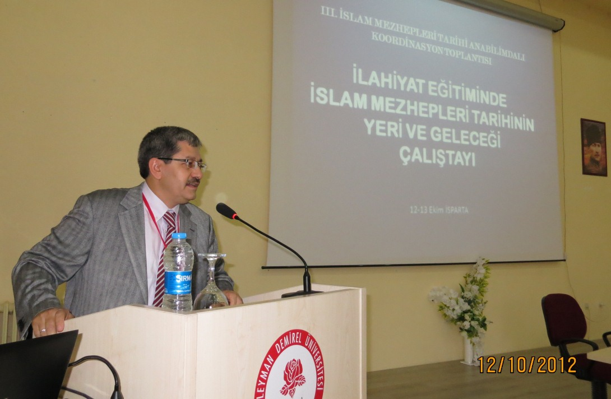
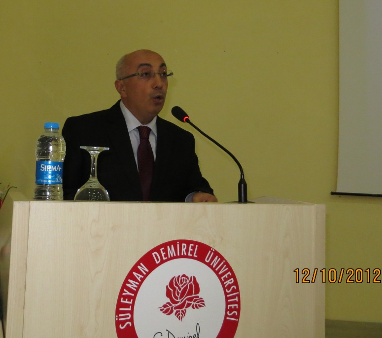
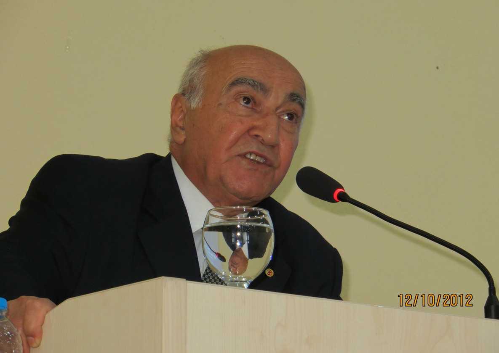

AD
ahmet ishak demir
24 Ekim 2012 · 20:10
24 Ekim 2012 · 20:10
Açılış
Prof. Dr. M. Saffet SARIKAYA
Prof. Dr. Ali Galip GEZGİN, Dekan Vekili
Prof. Dr. Ethem Ruhi FIĞLALI
Prof. Dr. M. Saffet SARIKAYA

Prof. Dr. Ali Galip GEZGİN, Dekan Vekili

Prof. Dr. Ethem Ruhi FIĞLALI
